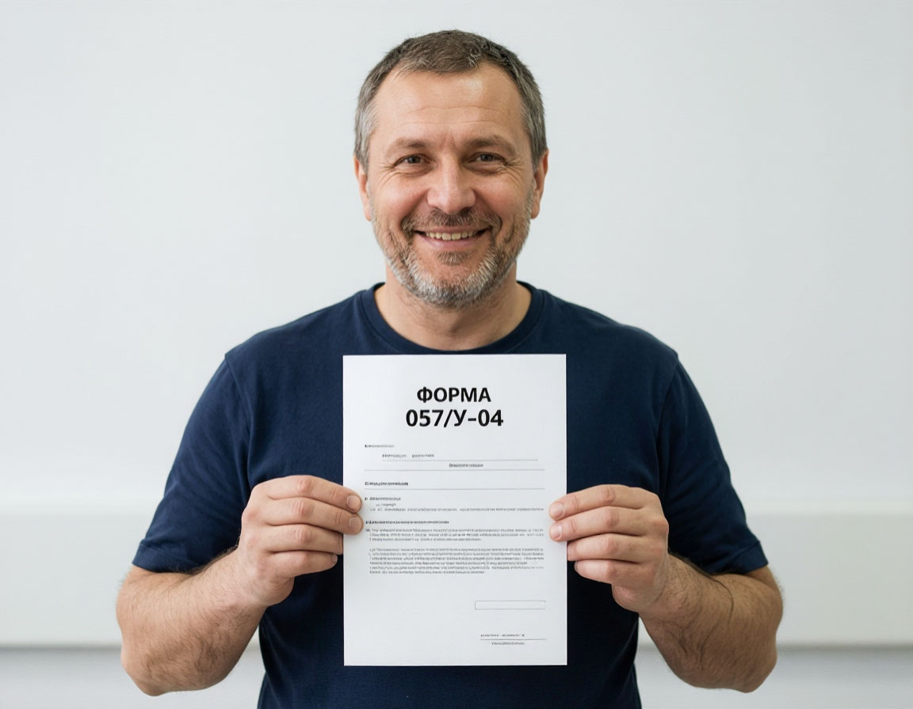
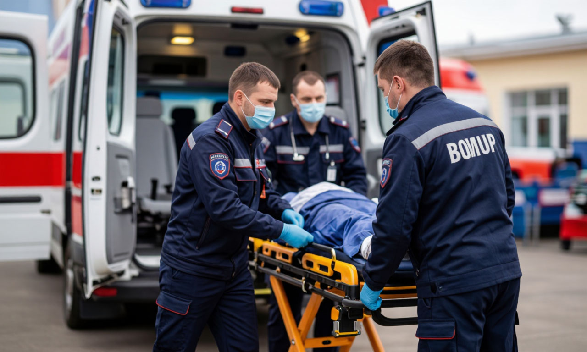
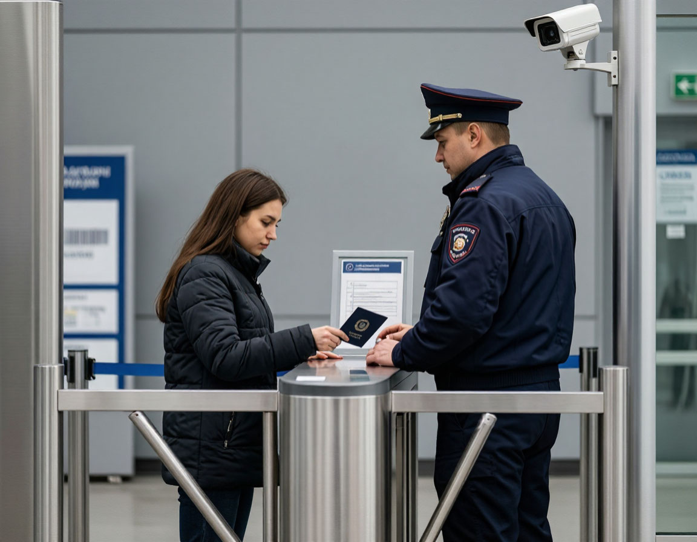
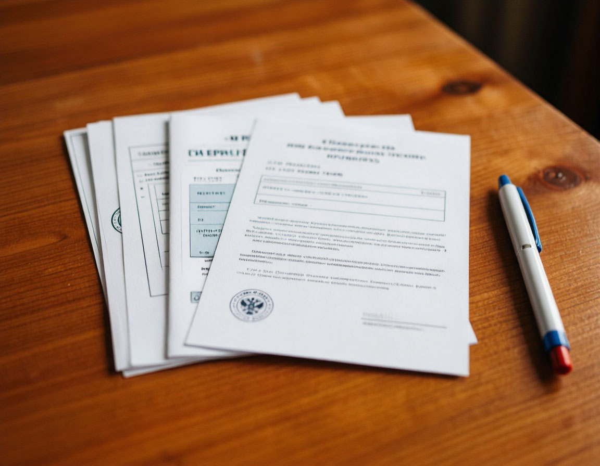
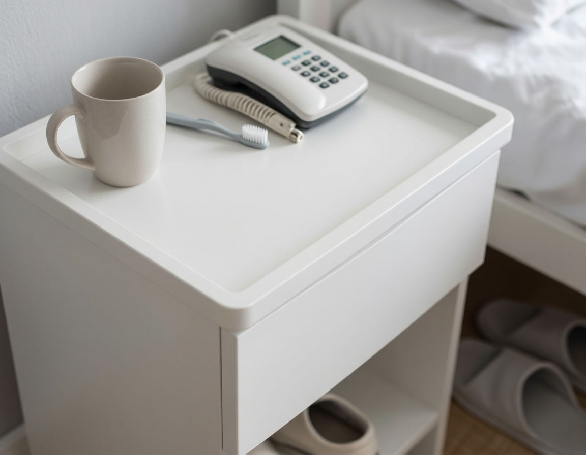

Пациентам и посетителям
Вся необходимая информация о порядке госпитализации, правилах пребывания в стационаре, часах посещений, необходимых документах, правах и обязанностях пациентов.
Порядок госпитализации

Плановая госпитализация
Плановая госпитализация осуществляется по направлению врача-специалиста (форма 057/у-04) при наличии медицинских показаний. Военнослужащие направляются медицинской службой воинской части. Гражданские лица — лечащим врачом поликлиники по месту жительства или врачом амбулаторно-поликлинического отделения госпиталя.
Для оформления в стационар пациенту необходимо прибыть в приёмное отделение в назначенную дату с 09:00 до 12:00, имея при себе полный пакет документов. Время ожидания оформления — не более 1 часа с момента прибытия.

Экстренная госпитализация
Экстренная госпитализация осуществляется круглосуточно через приёмное отделение по следующим показаниям: острая хирургическая патология, травмы, ранения, острые нарушения мозгового кровообращения, инфаркт миокарда, состояния, угрожающие жизни пациента.
При экстренной госпитализации допускается отсутствие полного пакета документов. Недостающие документы могут быть предоставлены родственниками или законными представителями в течение 24 часов с момента поступления.
Правила внутреннего распорядка для пациентов
Общие положения
Пациенты обязаны соблюдать лечебно-охранительный режим, выполнять назначения лечащего врача, бережно относиться к имуществу госпиталя. Запрещается курение на всей территории учреждения. Употребление алкогольных напитков и наркотических веществ категорически запрещено.
Режим дня
- Подъём: 07:00
- Завтрак: 08:00–09:00
- Врачебный обход: 09:00–12:00
- Лечебные процедуры: 09:00–14:00
- Обед: 13:00–14:00
- Тихий час: 14:00–16:00
- Посещения: 16:00–19:00
- Ужин: 17:00–18:00
- Отбой: 22:00
Хранение личных вещей
Верхняя одежда и обувь сдаются в гардероб. Ценные вещи, деньги, документы рекомендуется передать родственникам. Администрация госпиталя не несёт ответственности за сохранность личных вещей, оставленных в палате. При необходимости ценности могут быть сданы на хранение в сейф у старшей медицинской сестры отделения.
Пользование средствами связи
Использование мобильных телефонов разрешено в палатах в бесшумном режиме с 07:00 до 22:00. Запрещается использование мобильных устройств в отделении реанимации, процедурных кабинетах, диагностических кабинетах. Для видеозвонков рекомендуется использовать зону отдыха в холле отделения.
Правила посещения и пропускной режим
Часы посещений
Посещение пациентов разрешено в строго установленное время:
- Будние дни: с 16:00 до 19:00
- Выходные и праздничные дни: с 10:00 до 13:00 и с 16:00 до 19:00
Допуск в отделение реанимации и интенсивной терапии осуществляется только по согласованию с лечащим врачом или заведующим отделением в индивидуальном порядке.

Пропускной режим
Вход на территорию госпиталя осуществляется через контрольно-пропускной пункт (КПП). Посетители обязаны предъявить документ, удостоверяющий личность (паспорт). Пропуск выписывается на основании заявления пациента с указанием ФИО посетителя.
Одновременно в палате могут находиться не более двух посетителей. Дети до 14 лет допускаются только в сопровождении взрослых и при отсутствии признаков инфекционных заболеваний. В период карантинных мероприятий посещения могут быть временно ограничены или приостановлены.
Список необходимых документов и личных вещей

Документы для госпитализации
- Документ, удостоверяющий личность (паспорт РФ, военный билет, удостоверение личности военнослужащего)
- Полис обязательного медицинского страхования (для гражданских лиц)
- Полис добровольного медицинского страхования (при наличии)
- Направление на госпитализацию по форме 057/у-04
- Выписка из амбулаторной карты (форма 027/у) с результатами обследований
- Результаты лабораторных и инструментальных исследований (срок давности — не более 14 дней)
- Для военнослужащих — направление из воинской части и продовольственный аттестат

Рекомендованные личные вещи
- Сменная одежда (пижама, спортивный костюм)
- Сменная обувь (тапочки, желательно моющиеся)
- Предметы личной гигиены (зубная щётка, паста, мыло, шампунь, расчёска)
- Полотенце
- Кружка, ложка
- Телефон, зарядное устройство
- Книги, журналы (по желанию)
- Очки, слуховой аппарат (при необходимости)
Постельное бельё и полотенца предоставляются госпиталем. Хранение скоропортящихся продуктов в палатах запрещено.
Права и обязанности пациентов
Пациент имеет право на:
- Уважительное и гуманное отношение со стороны медицинского персонала
- Получение информации о состоянии своего здоровья, диагнозе, прогнозе и плане лечения
- Информированное добровольное согласие на медицинское вмешательство или отказ от него
- Конфиденциальность информации о факте обращения за медицинской помощью и состоянии здоровья
- Облегчение боли, связанной с заболеванием или медицинским вмешательством
- Допуск законного представителя, адвоката, священнослужителя
- Подачу жалобы или предложения по качеству оказания медицинской помощи
Пациент обязан:
- Соблюдать правила внутреннего распорядка и лечебно-охранительный режим
- Выполнять назначения лечащего врача и медицинского персонала
- Бережно относиться к имуществу госпиталя
- Уважительно относиться к медицинскому персоналу и другим пациентам
- Соблюдать тишину в палатах и коридорах в часы отдыха
- Предоставлять достоверную информацию о состоянии здоровья, перенесённых заболеваниях, аллергических реакциях
- Своевременно оплачивать медицинские услуги (при получении помощи на платной основе)
Диетическое питание
Организация питания
Лечебное питание предоставляется всем пациентам стационара бесплатно в рамках программы государственных гарантий. Организация питания осуществляется в соответствии с приказом Минздрава России от 05.08.2003 № 330 «О мерах по совершенствованию лечебного питания в лечебно-профилактических учреждениях Российской Федерации».
Приём пищи осуществляется в столовой отделения или в палате (для пациентов на постельном режиме). Индивидуальное меню составляется с учётом назначенной диеты и переносимости продуктов.
Стандартная диета (ОВД)
Основной вариант. 2200–2500 ккал/сут. 4–5 раз в день.
Щадящая диета (ЩД)
Механическое и химическое щажение. При заболеваниях ЖКТ.
Высокобелковая диета (ВБД)
Повышенное содержание белка. После операций, травм.
Низкобелковая диета (НБД)
Ограничение белка. При почечной недостаточности.
Низкокалорийная диета (НКД)
Ограничение калорий. При ожирении, диабете 2 типа.